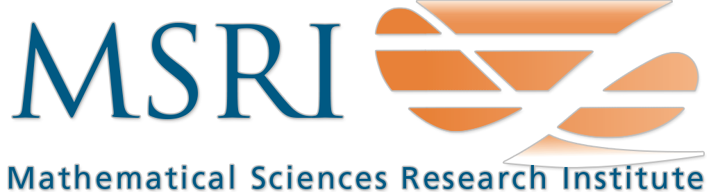

Thomas Polstra
Thomas Polstra
Office: 131 Kerchof Hall
Email: tp2tt@virginia.edu
Curriculum Vitae
About me
I am a commutative algebraist, member of the Mathematical Sciences Research Institute in Berkeley, California, and academic visitor at the University of Virginia.
Publications and preprints
-
Local Cohomology Bounds and the Weak Implies Strong Conjecture in dimension 4, with Ian Aberbach,
submitted.
-
F-singularities: a commutative algebra approach (preliminary version), with Linquan Ma,
preliminary version.
-
F-purity deforms in Q-Gorenstein rings, with Austyn Simpson,
submitted.
-
Compatible ideals in Gorenstein rings, with Karl Schwede,
preprint available.
-
Local cohomology bounds and test ideals, with Ian Aberbach,
preliminary version.
-
Covers of rational double points in mixed characteristic, with Javier Carvajal-Rojas, Linquan Ma, Kevin Tucker, and Karl Schwede,
submitted.
-
Global F-splitting ratio,with Alessandro De Stefani and Yongwei Yao,
submitted.
-
A theorem about maximal Cohen-Macaulay modules,
to appear in Int. Math. Res. Not.
-
Global Frobenius Betti numbers and Euler characteristic, with Alessandro De Stefani and Yongwei Yao,
to appear in Mich. M. Journal.
-
F-nilpotent rings and permanence properties, with Jennifer Kenkel, Kyle Maddox, and Austyn Simpson,
to appear in J. Commutative Algebra.
-
Equimultiplicity theory of strongly F-regular rings,with Ilya Smirnov,
Michigan Math. J. Advance Publication 1 - 20, 2021.
-
Nilpotence of Frobenius actions on local cohomology and Frobenius closure of ideals, with Pham Hung Quy,
J. Algebra 529 (2019), 196--225.
-
F-signature under birational morphisms, with Linquan Ma, Karl Schwede, and Kevin Tucker,
Forum Math. Sigma 7 (2019), e11, 20 pp.
-
Continuity of Hilbert-Kunz multiplicity and F-signature, with Ilya Smirnov,
Nagoya Mathematical Journal, 1-24. doi:10.1017/nmj.2018.43.
-
Globalizing F-invariants, with Alessandro De Stefani and Yongwei Yao,
Adv. Math. 350 (2019), 359--395.
-
F-signature and Hilbert-Kunz Multipicity: a combined approach and comparison, with Kevin Tucker,
Algebra & Number Theory 12-1 (2018), 61--97.
-
Generalizing Serre's Splitting Theorem and Bass's Cancellation Theorem via free-basic elements,with Alessandro
De Stefani and Yongwei Yao,
Proc. Amer. Math. Soc. 146 (2018), no. 4, 1417--1430.
-
Uniform bounds in F-finite rings and lower semi-continuity of the F-signature,
Trans. Amer. Math. Soc. 370 (2018), no. 5, 3147--3169.
-
Depths and Stanley depths of path ideals of spines, with Daniel Campos, Susan Morey, and Chelsey Paulsen,
Involve, 9(1): 155-170, 2016.
-
Depths and Cohen-Macaulay Properties of Path Ideals, with Daniel Campos, Susan Morey, and Chelsey Paulsen,
Journal of Pure and Applied Algebra, 218: 1537-1543, 2014.
